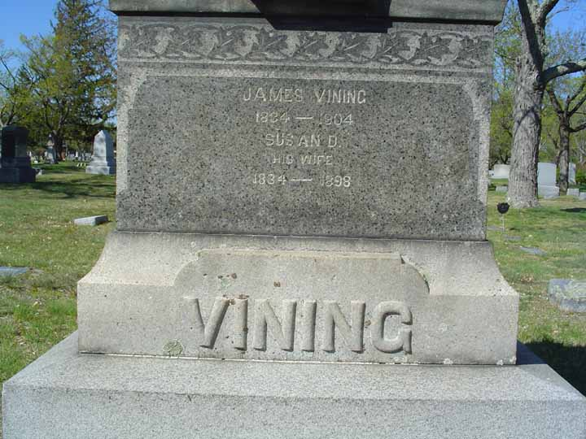
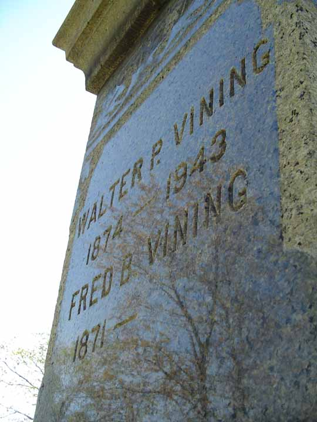

Documentation for James Vining - Susan D. Clark
Census Data
| |
1870 |
1880 |
1890 |
1900 |
1910 |
| James Vining |
36 |
46 |
? |
66 |
dead |
| Susan D. (Clark) Vining |
35 |
45 |
? |
dead |
|
| Fred B. Vining |
|
8 |
? |
28 |
? |
| Walter R. Vining |
|
5 |
? |
25 |
? |
1870 Lewiston (ward 7), Androscoggin County, Maine:

1880 Lewiston (ward 7), Androscoggin County, Maine:

1900 Lewiston (ward 7), Androscoggin County, Maine. Also living in this household in 1900 was Amelia Brown (housekeeper, 62 y., b. Maine).

Death Data
Gravestone of James Vining and Susie D. Clark, in Mount Auburn Cemetery, Auburn, Androscoggin County, Maine:

Gravestone of Fred B. and Walter P. Vining, sons of James Vining and Susie D. Clark, in Mount Auburn Cemetery, Auburn, Androscoggin County, Maine:
